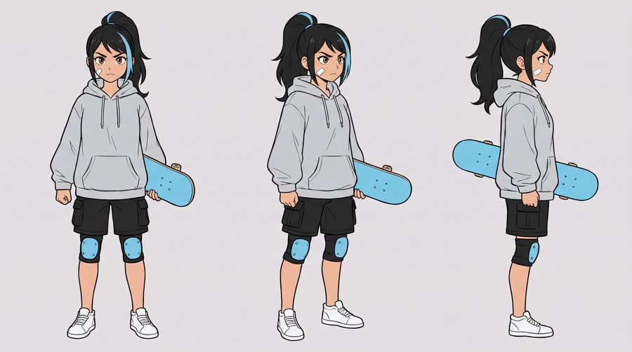
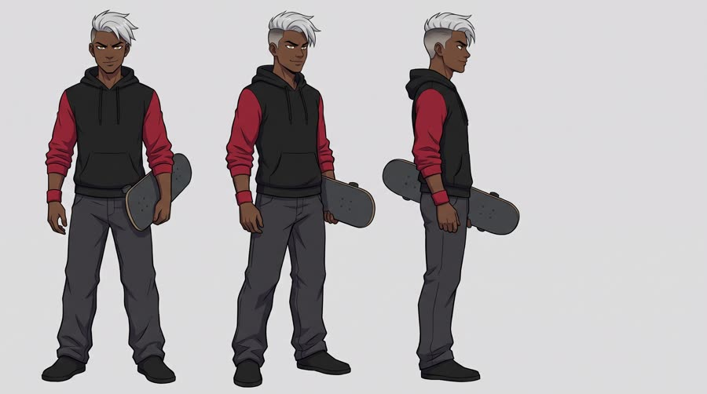
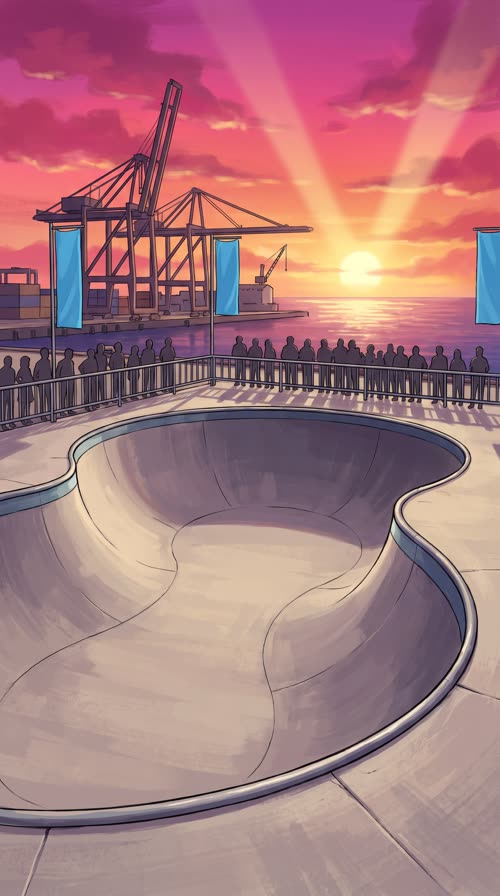

Rookie Arc
Final of the Harbor Cup skate tournament at sunset. A rookie has fallen twice, the three-time champion is laughing, and she has one run left. Her power-up is Red Bull Sugarfree.
Anime grammar gives the product a job everyone already understands: the power-up. Viewers raised on shonen arcs read the can crack as the transformation cue instantly, and the look breaks the feed pattern of live-action ads. Listed among the fastest-growing AI animation ad styles in 2026 practitioner posts; it is a variety lever on a proven underdog script, not a replacement for it.
Contact sheet
One keyframe per shot, with the caption as it will appear.


Cast and world

Voice: bright, a little raspy, gets steel in it after the power-up, American

Voice: smooth, lazy, cocky, American

World. The fictional Harbor Cup, a street and bowl skateboarding tournament at the fictional Pier Nine Bowl on the waterfront of the fictional city of Port Kessel, at sunset, painted in anime style. Palette. Sunset magenta, orange and deep violet sky; the hero and her power-up aura in sky blue and silver (from the can); the rival in charcoal and crimson.
Fictional brands. Harbor Cup (the tournament; banners are blank solid sky blue in frame, the name appears only in post); Pier Nine Bowl (the venue); Kestrel Decks (Mika's board, plain sky-blue deck in frame, never lettered by the model)
Beats
| Time | Beat | What happens |
|---|---|---|
| 0-2.4 | hook | Dramatic still of the rival, speed lines behind him, taunting the rookie. |
| 2.4-7.0 | setup | The rookie on the concrete after her second fall, one run left; she refuses to quit. |
| 7.0-14.2 | product | The power-up: the can held to the sun, the crack as a transformation cue, the aura, the brand line. |
| 14.2-20.4 | build | She drops in with speed lines and launches the biggest air of the day over the rival's head. |
| 20.4-26.4 | payoff | Dramatic still of the rival's shock, then she lands clean and the crowd erupts. |
| 26.4-30 | cta | Painted pack shot of the can on the bowl's coping at sunset, tagline. |
Screenplay
29 spoken words in 30 s. Each line keeps its intent (fixed in the template) and its wording (written for this product).
| Time | Speaker | Line | Intent (template) |
|---|---|---|---|
| 0.3-2.2 | Dax | Rookie. You'll never land it. lazy, cocky, looking down at her | Hook: the rival dismisses the hero in one line, so the viewer instantly takes her side. |
| 2.8-4.4 | Mika | Two falls. One run left. breathing hard, to herself, eyes down | State the stakes: the hero is losing and has one chance left. |
| 5.2-6.6 | Mika | Not today. quiet, jaw set, steel coming into the voice | The hero refuses to quit and reaches for her edge. |
| 11.4-14.0 | Mika | Red Bull Sugarfree. Locked in, no sugar. calm and powerful after the sip, eyes glowing, a half smile · Say: RED BULL SHUG-er-free, three clear words | Product line: name the product and the one benefit the comeback needs, using an allowed claim only. |
| 20.8-22.6 | Dax | No way. She's a rookie? stunned whisper, sweat drop | The rival's reaction proves the power-up worked. |
| 24.2-25.4 | Mika | Not anymore. cool, grinning, fist raised | Payoff: the hero's status has changed, in two words. |
| 27.4-29.4 | Mika (off camera) | Wiiings without sugar. warm, confident voiceover · Say: WINGS, stretch the vowel slightly | Tagline in the brand's own words. |
Generation plan
U1 · 0 to 7.0 s · 7 s generation
Shots S01, S02, S03 · References: dax card, mika card, bowl plate, S01 keyframe as first frame
9:16 2D anime, cel shading, hand-painted sunset background, skate tournament at a harbour bowl. Shot 1 (0 to 2.4 s): low-angle dramatic still of @Image1 (Dax) on the bowl's coping, a snap push-in then a freeze, crimson speed lines behind him, he smirks down and says lazily: "Rookie. You'll never land it." Shot 2 (2.4 to 4.6 s): high-angle wide, slow crane down to @Image2 (Mika) sitting at the bottom of the bowl after a fall, board upside down beside her, she breathes hard and says to herself: "Two falls. One run left." Shot 3 (4.6 to 7 s): fast push-in on Mika's eyes as they snap up, determined, she says quietly: "Not today." Limited animation, held poses, anime timing. Native sound: crowd murmur, board clatter, wind, a heartbeat thump. No music. No text, no speech bubbles.
U2 · 7.0 to 14.2 s · 8 s generation · exact-risk (short, cheap to re-roll)
Shots S04, S05, S06 · References: product can official, mika card, S04 keyframe as first frame
9:16 2D anime power-up sequence at sunset. Shot 1 (0 to 2.2 s): locked low-angle insert, a hand raises the exact can from @Image1 against the low sun, closed, label to camera, a drawn lens flare slides across. Shot 2 (2.2 to 4.2 s): macro insert, the thumb cracks the ring pull and sky-blue and silver energy lines burst out of the opening with a white impact flash. Shot 3 (4.2 to 8 s): slow orbit around @Image2 (Mika) as a sky-blue aura rises around her, ponytail lifting, eyes glowing blue; she lowers the open can to chest height with the label readable and says calmly: "Red Bull Sugarfree (said RED BULL SHUG-er-free, three clear words). Locked in, no sugar." The can is drawn in cel shading but keeps the shape, colours, red wordmark, two red bulls, gold sun and SUGARFREE exactly as @Image1, and stays sharp outside the glow. Native sound: rising whoosh, the can crack and fizz, deep boom, aura hum. No music. No text.
U3 · 14.2 to 26.4 s · 13 s generation
Shots S07, S08, S09, S10 · References: mika card, dax card, bowl plate, S07 keyframe as first frame
9:16 2D anime action sequence at a harbour skate bowl, sunset. Shot 1 (0 to 2.4 s): extreme low angle, @Image1 (Mika) drops into the bowl toward camera on a plain sky-blue skateboard with four wheels, radial speed lines, a sky-blue aura trail. Shot 2 (2.4 to 6.2 s): sakuga moment, slow-motion wide as she launches a huge air, grabbing the board, silhouetted against a giant orange sun, sailing high over @Image2 (Dax) who looks up from the deck. Shot 3 (6.2 to 8.8 s): dramatic still of Dax frozen in shock on a flat crimson background, a sweat drop, he whispers: "No way. She's a rookie?" Shot 4 (8.8 to 13 s): Mika lands clean on the deck, board under her feet, raises a fist and grins: "Not anymore." The crowd erupts. Normal gravity, the board stays one rigid deck with four wheels. Native sound: wheels roaring on concrete, wind rush, a beat of silence at the peak, the crowd. No music. No text.
U4 · 26.4 to 30 s · 4 s generation · exact-risk (short, cheap to re-roll)
Shots S11 · References: product can official, S11 keyframe as first frame
9:16 2D anime painted pack shot. Slow parallax push toward the exact can from @Image1 standing upright and open on the steel coping of a skate bowl at sunset, label to camera, drawn in cel shading with sparkling condensation, golden rim light, a few sky-blue sparkles drifting past, the harbour and magenta sky softly behind. The can does not move or change shape. Keep the top third of the frame as empty sky. Native sound: distant crowd, harbour wind. No music, no text.
Sound, music, voice, captions
| 0 to 7.0 s | underdog | J-rock style opening theme intro: a lone clean electric guitar riff over a muted kick, tense and wistful, in E minor, 150 bpm half-time feel; drops out under each line. |
| 7.0 to 14.2 s | power-up | A riser and a snare roll build under the can, a full-band hit exactly on the crack, then driving drums and overdriven guitars kick in at full tempo. |
| 14.2 to 26.4 s | final run | The chorus: soaring lead guitar melody, double-time drums, a cut to near-silence at the peak of the air, a huge return on the landing. |
| 26.4 to 30 s | ending card | The riff resolves to E major, a final power chord that rings out, like an ending theme sting. |
Added sound
- 9.4 s: can crack and fizz layered with a deep anime boom (the crack is the power-up cue and must register over the music hit)
- 1.0 s: crystalline shing on Dax's eye glint (classic rival cue that sells the anime grammar in the hook)
- Mika: native voice from U1, then her U1 vocal stem as voice reference for U2, U3 and the tagline voiceover
- Dax: native in U1, his U1 stem as voice reference for the U3 whisper
font: Noto Sans Black, size: 5% of frame height, color: #FFFFFF, active word: #8FD3FF (sky blue) for the word being spoken, others white, shadow: 3px solid black outline plus hard 0 4px 0 rgba(0,0,0,.45) drop, fansub style, position: centre, 72% down the frame, above the platform UI safe zone, max words on screen: 5, box: False, sfx lettering: Onomatopoeia (KSSHH on the crack, SHING on the eye glint, BOOM on the impact frame) is added in post as hand-drawn brush lettering in white with a sky-blue outline, tilted 8 to 12 degrees, never by the model, name cards: Character name cards (MIKA SANTOS / ROOKIE, DAX HOLLOWAY / 3x CHAMPION) slide in from the left in post on each character's first appearance
Post text- 0.4 to 2.2 s: DAX HOLLOWAY / 3x Harbor Cup champion (anime name card: white Noto Sans Black on a crimson slanted bar sliding in from the left, lower left third)
- 2.6 to 4.4 s: MIKA SANTOS / Rookie (anime name card: white Noto Sans Black on a sky-blue slanted bar sliding in from the left, lower left third)
- 9.3 to 10.6 s: KSSHH! / (hand-drawn brush SFX lettering, white with a sky-blue outline, tilted 10 degrees, bursting from the can opening)
- 20.5 to 22.8 s: !? / (brush lettering beside Dax's head, white with a black outline)
- 27.2 to 30 s: Red Bull Sugarfree / Wiiings without sugar (Noto Sans Black, white with a sky-blue glow, centred in the empty sky above the can, slams in with a 4 frame scale bounce)
Adaptation contract
How this same concept takes any physical product.
| Product type | Where it sits in the story | Scale |
|---|---|---|
| ingested | she cracks and drinks it at the top of the bowl before her last run; the crack is the power-up | hand |
| applied | she applies it at the edge of the bowl (sunscreen, grip wax, balm) and the aura starts on her skin | hand |
| worn | she puts it on before the run (shoes, gloves, glasses, helmet) and the transformation sparks from it | body |
| handheld | she clicks, switches on or snaps it (earbuds, tool, gadget) and the power-up begins | hand |
| carried | she unzips it (backpack, case) and the glow spills out | hand to lap |
| home | a flashback to her room: the thing she trains with or sleeps on every night powers the memory | room |
| consumable | she tears the pack or refill open at the top of the bowl and the aura bursts out | hand |
Style bible
Look. Cel-shaded characters with clean ink linework and two-tone shadows over lush hand-painted background art. Big expressive eyes with specular highlights, dramatic low and high angles, radial speed lines behind emotion beats, impact frames (a single high-contrast inverted frame) on hits, dramatic stills where the frame freezes with a flat limited palette and a strong silhouette. The rival is always framed higher than the hero until the payoff, when the hierarchy flips. The product is drawn with the same cel shading but keeps its exact label, like a hero prop in a key visual.
Camera. Anime camera language, not live-action: fast push-ins on eyes, whip pans with smear frames, parallax pans across layered backgrounds, a slow rotating orbit for the power-up, and freeze-frame dramatic stills for the rival's taunt and the hero's reaction. Hold the product in a locked insert with a lens flare glint. One sakuga moment per film (the final trick), everything else on held poses with limited animation.
Light and texture. Golden-hour sunset with a saturated magenta and orange sky, rim light on every character, bloom on highlights, and the power-up lighting everything from within in sky blue and silver. Lens flares and light shafts are drawn, not photographic. Clean digital cel paint with a subtle paper grain on the background art, crisp line art, soft glow compositing, no film grain, no photoreal skin.
Pacing. Hook in under 2 seconds with the rival's taunt as a dramatic still. Cut every 1.5 to 3 seconds. The can crack is a two-beat power-up: a held macro insert of at least 1.5 s, then the transformation. The final trick gets the longest single shot, then a freeze-frame on the rival's shock, then a calm, painted pack shot.
Sound. Native sound from the generations: skateboard wheels on concrete, crowd roar, wind. Anime-specific sound design matters: a rising whoosh into the power-up, a sharp crystalline shing on the eye glint, a deep boom on the impact frame. Score is a J-rock style opening theme (electric guitars, fast drums), generated per movement and stitched at picture cuts.
Known failures.
- the model adds Japanese or English lettering, SFX and speech bubbles on its own: say no text, no letters, no speech bubbles, no sound effect lettering anywhere
- the can turns into a generic anime soda can or loses the bulls: say it is drawn with clean cel shading but the label, red wordmark, two red bulls, gold sun and SUGARFREE are copied exactly from the product reference
- the photoreal product reference can pull the whole frame photoreal: repeat that the entire frame including the hands is 2D anime illustration
- character design drifts between shots (eye colour, hair streak, bandage): pass the character sheet and restate the three identifiers every time
- skateboards grow extra wheels or bend: say a plain skateboard deck with exactly four wheels and no graphics
- crowd banners pick up readable real words: say banners are blank solid colour
- aura effects swallow the product: keep the can outside the glow or state it stays sharp and fully visible
- the model lightens darker-skinned characters toward pale anime defaults: state the skin tone explicitly (deep brown skin) in the card and in every shot of that character
- an unowned hand in a product insert gets random gloves: say whose hand it is, bare, with the character's sleeve
Claims and cost
Claims used (all from the product page): Caffeine helps to improve concentration and increase alertness; Same benefits of the original Energy Drink, without sugar (tagline form)
Video estimate: 32 s of generation at $0.27/s = $8.64 first pass, $20 to 30 with retakes, plus about $1.5 music.